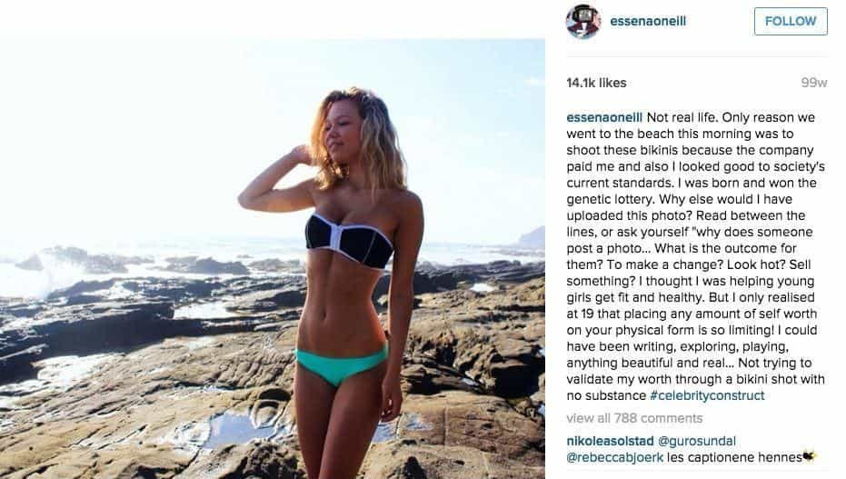

Kyle is an entrepreneur and nomad who has been living abroad since 2016. He blogs at This Is Trouble. Follow him on Facebook.


I had another moment of enlightenment this week, and the timing couldn’t be better. Just days after I penned the article about how women have lost touch with any realistic expectations in the dating scene, my eyes were forced open again.
I’d recently heard about one of my mom’s friends, who had lost touch with her daughter. My mom used to actually babysit said daughter. I grew up with her coming to my house every week, eating pancakes and playing on the playground. I wasn’t friends with her outside of that, but I knew the girl as early as when she was 7 or 8 (I’m a couple years older). It’s quite cliché, but imagine my reaction this week when my mom told me that she appeared in Playboy.
None of the photos on this page are of the actual girl herself, but rather illustrate the prominent thirst that is currently sweeping through Instagram.

Fortunately (or unfortunately, depending on how you look at it), my mom was incorrect on the Playboy statement. It turns out she’s just done some photo shoots involving the Playboy logo with some amateur photographers. She’s definitely not a Playboy model, but just another one of the “Instagram models” out there on the Internet. The girls with large followings, and with it the typical inflated egos, a very limited shelf life, and in many cases, a soul completely broken.
Some highlights from the profile include:
My first thought was just, “Wow.”
This is a girl who I basically grew up with, plastering naked photos of herself all over Instagram. Slurping up the attention of thousands of thirsty guys, and living the high life. Like I said, it’s cliché. Obviously, I know lots about how far American culture as a whole has fallen.
But it’s a completely different situation to see something like this happening to someone you knew growing up. It’s also incredibly depressing—because growing up, she was at least a reasonably nice girl. Her mom and dad were awesome (though I now suspect her father was a complete wuss). She grew up in a good neighborhood, went to a good school, and was seemingly on the right track. Goes to show that almost nobody is able to resist the allure of receiving so much attention on the Internet. Because the entire Western culture is built around instant gratification.
This leads me to my next point.
That’s what hit me next: what the hell is this girl going to do next with her life?
Let’s face it, “Instagram model” is a pretty short career. The barrier to entry is basically zero—any good looking girl can start posting pictures of herself, say she’s a model, and get offers to get money for ads, get pooped on, and God-knows-what-else.
So what happens when these models hit the wall? Well, they will already have a built-in audience. But what happens when younger and hotter girls start to grow accounts bigger than theirs? Just like any model, the career shelf life is incredibly short.
In this case, the girl is almost 24. She only has 10k followers—really not much by the Instagram world standards. If we consider the fact that women’s physical prime begins at 18 and ends at 25 (and that may be generous)—her career is basically already over! And yes, it’s only the physical aspect that matters in the modeling world—for obvious reasons.
While you can put money on the fact that feminism as a whole would encourage her to pursue a “real career” after the Instagram show is over, she doesn’t have a college degree. She doesn’t have any trade, language or any applicable skills that would translate to a real world job.
The question becomes—what’s next for her?
Many people here would say that she should cash in her chips NOW—find a chump willing to foot the bill for her life and future offspring. A chump willing to look past the behind-the-scenes life of an “Instagram model”, and still put a ring on it. She should do this all while she’s still young and beautiful with the most value she will ever have in terms of the sexual market.
Of course, we all know that will never happen.
To step out of the spotlight in your prime is something that humans are never good at. She will think that the attention, sponsorship offers, and free gifts are never going to end. Feminism will tell her to keep going with it, to not cash her chips. After all, she has her 30s to find a good man and have children, right?
She has at least another decade of Instagram whoring modeling before she even has to consider her declining looks and start looking towards the future.
But it doesn’t work like that. Many of these Instagram models are all lighting, makeup, and angles. They don’t have the genuine beauty that (some) paid models have. Nor do they have the personality and charm of foreign girls. So even then, you must consider the fact that many of these girls certainly don’t look as good in-person as they do online. Therefore, their market value for marriage is even lower than it appears in the digital space.
And to top it all off, the Instagram modeling lifestyle is certainly going to age girls quicker than normal. It seems all of them participate in raves, music festivals, and extreme parties. With all of these territories often comes a high use of drugs, casual sex, and an overall hedonistic lifestyle that permanently tattoos the infamous 1,000-Cock-Stare deep within their eyes.
Men are desperate enough. If this girl were to start soon enough, she’d find someone to permanently commit to her fading looks. Willing to overlook all of the drugs, all of the sex, and to never question any further because he’s scared to know. But, she probably won’t.
She’ll continue on this train until the money dries up, the attention stops, and she’s left with nothing left to do in life except collect cats. Unfortunately, unlike her photo about cats and money—she probably won’t have any money in the bank. Come on, do you really think she’ll save anything?
Instead, she’ll be left with nothing but memories of the good days, an ever-lasting pining for Alpha dick, and the loneliness from knowing that her best days are never coming back.
Meanwhile, a cute, wholesome 18-year-old girl will take a selfie and upload it to Instagram. She’ll have her lips pursed, mimicking a duck. She’ll get hundreds of comments and feel good about herself. She’ll live the high life—all the parties, drugs, and booze she could ever want.
She might even get a free trip to Dubai. Life will be be a blur, with all of the fun parties, high-living, and money she makes. And before she blinks, it’ll all be over.
If you want to learn how to take advantage of dating in the digital world, check out my book Cracking OkCupid. For advice about escaping American women for greener pastures, check out Eastern European Travel.
Read More: How To Meet Women Through Sugar Daddy Dating Sites